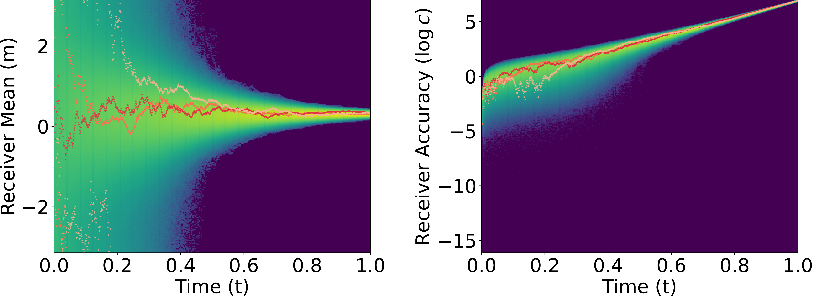
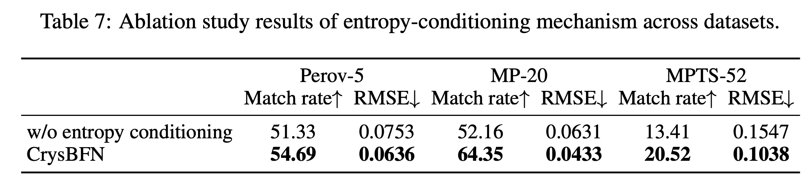
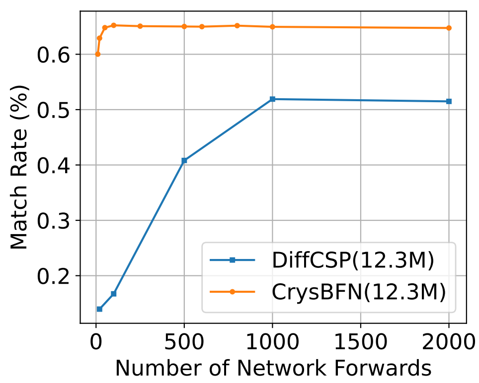
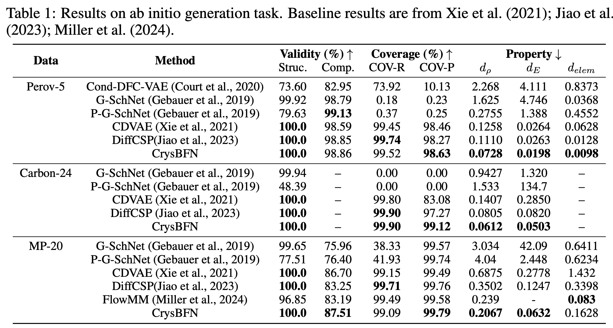
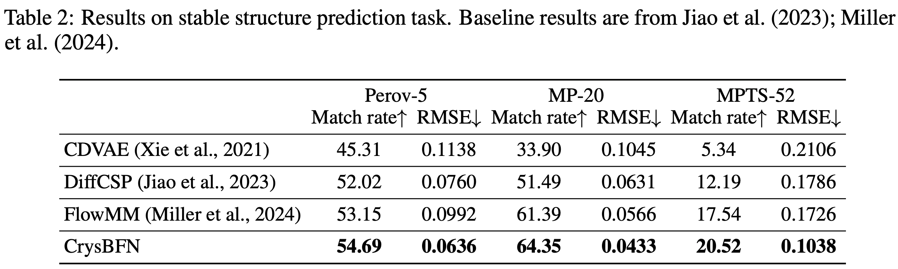

Generative models require the guidance of uncertainty or entropy in intermediate states to precisely regulate step sizes. This is the reason why we have two plots to describe the proposed generation process as follows.

The left map is similar to diffusion based and flow-matching based methods, which is the sampling trajectory in sample space. The right heatmap shows the uncertainty of the intermediate states, which is fed into the network to guide the generation process.
We verify this design across datasets:

Intuitively, the performance without entropy guidance is similar to previous diffusion based approach.
In terms of sampling efficiency, there is an order of magnitude improvement compared to diffusion models.

Performance on ab-initio generation tasks:

Performance on crystal structure prediction tasks:

Generative modeling of crystal data distribution is an important yet challenging task due to the unique periodic physical symmetry of crystals. Diffusion-based methods have shown early promise in modeling crystal distribution. More recently, Bayesian Flow Networks were introduced to aggregate noisy latent variables, resulting in a variance-reduced parameter space that has been shown to be advantageous for modeling Euclidean data distributions with structural constraints (Song et al., 2023). Inspired by this, we seek to unlock its potential for modeling variables located in non-Euclidean manifolds e.g. those within crystal structures, by overcoming challenging theoretical issues. We introduce CrysBFN, a novel crystal generation method by proposing a periodic Bayesian flow, which essentially differs from the original Gaussian-based BFN by exhibiting non-monotonic entropy dynamics. To successfully realize the concept of periodic Bayesian flow, CrysBFN integrates a new entropy conditioning mechanism and empirically demonstrates its significance compared to time-conditioning. Extensive experiments over both crystal ab initio generation and crystal structure prediction tasks demonstrate the superiority of CrysBFN, which consistently achieves new state-of-the-art on all benchmarks. Surprisingly, we found that CrysBFN enjoys a significant improvement in sampling efficiency, e.g., ~100x speedup 10 v.s. 2000 steps network forwards) compared with previous diffusion-based methods on MP-20 dataset.
@misc{wu2025periodicbayesianflowmaterial,
title={A Periodic Bayesian Flow for Material Generation},
author={Hanlin Wu and Yuxuan Song and Jingjing Gong and Ziyao Cao and Yawen Ouyang and Jianbing Zhang and Hao Zhou and Wei-Ying Ma and Jingjing Liu},
year={2025},
eprint={2502.02016},
archivePrefix={arXiv},
primaryClass={cs.LG},
url={https://arxiv.org/abs/2502.02016},
}